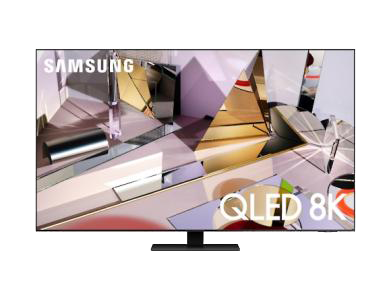
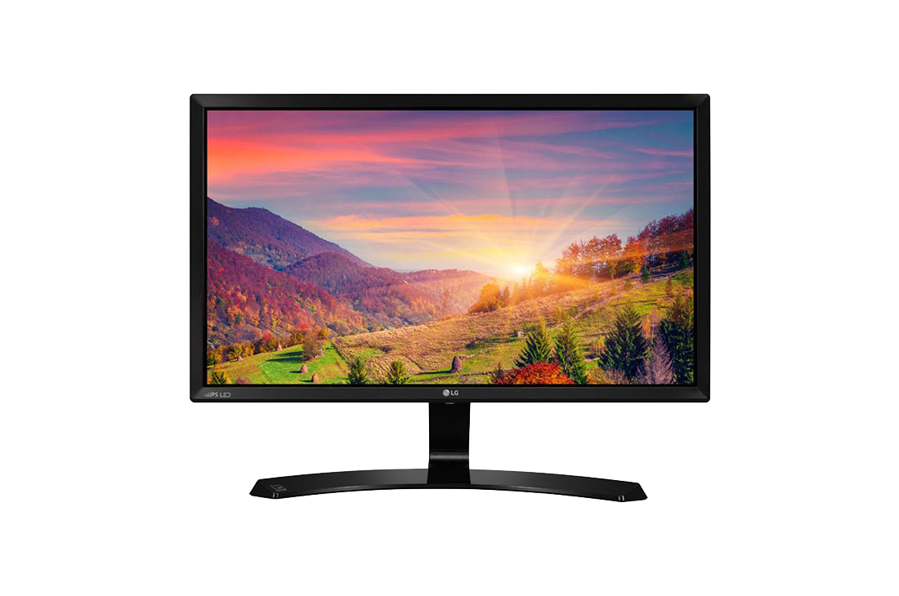
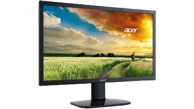
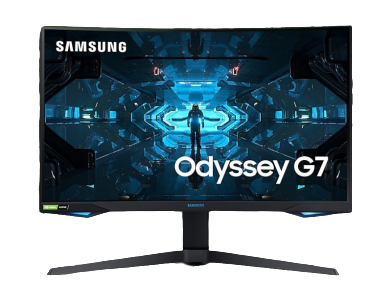
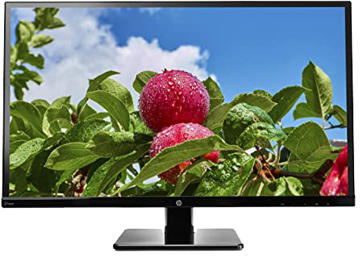

back

Quantum dot led QLED,
la sua tecnologia si basa su nanocristalli semiconduttori .
il colore nero è un grigio che vuole assomigliare ala tecnologia oled,
La tecnologia a punti quantistici supporta schermi grandi e flessibili che non dovrebbero consumarsi come gli OLED.
son
Le proprietà e le prestazioni degli schermi QLED sono determinate dalla dimensione e dalla composizione dei punti quantistici.
I punti quantistici, di dimensione compresa tra 2 e 10 nanometri, possono essere sia foto-attivi (fotoluminescenti) sia elettro-attivi (elettroluminescenti),
permettendo così di essere integrati nelle architetture dei display.

La struttura base di un pannello LCD è composta da due superfici adiacenti,
al cui interno sono contenuti i cristalli liquidi.
Questi non sono in grado di emettere luce o di generare il colore, motivo per cui necessitano della retroilluminazione,
posta dietro al pannello, e di filtri per creare il colore.

I panelli TN.
questa tecnologia era impiegata nei modelli di fascia molto bassa,
costi produttivi
minori di quelli dei concorrenti IPS, VA e QLED. i monitor tn vengono utillizati nei monitor dedicati ai gamer e nei portatili,
acquistare oggi uno schermo TN ha senso esclusivamente se si punta al massimo risparmio.
sono quelli con la fedeltà cromatica inferiore (utilizzano di norma una profondità di colori a 8 bit) e con gli angoli di visione più stretti,
senza dimenticare la resa dei neri,

VA
avanzamenti tecnologici hanno permesso di abbassare il tempo di risposta,
rendendoli ottimi anche per il gaming. La caratteristica principale dei pannelli VA è la loro capacità di spegnere la retroilluminazione,
per permettere di creare dei neri molto profondi
generando più un grigio che un nero profondo.
ma il tempo di risposta è generalmente superiore. Questo ha portato,
nel corso degli anni, a un utilizzo minimo in prodotti come i monitor da gaming,
ma nell'ultimo periodo sono arrivati sul mercato schermi VA dedicati ai giocatori con tempi risposta molto bassi, come il Samsung CHG90.

I pannelli IPS sono quelli più in voga nell'ultimo periodo.
si passa dagli angoli di visione elevati per finire alla grande accuratezza nella riproduzione del colore.
Anche i tempi di risposta sono ormai quasi arrivati ai livelli delle tecnologia TN.